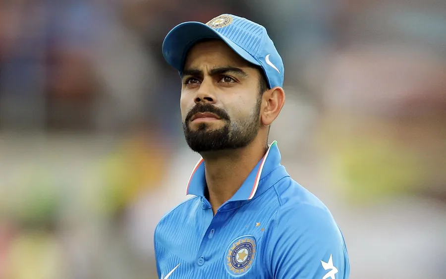
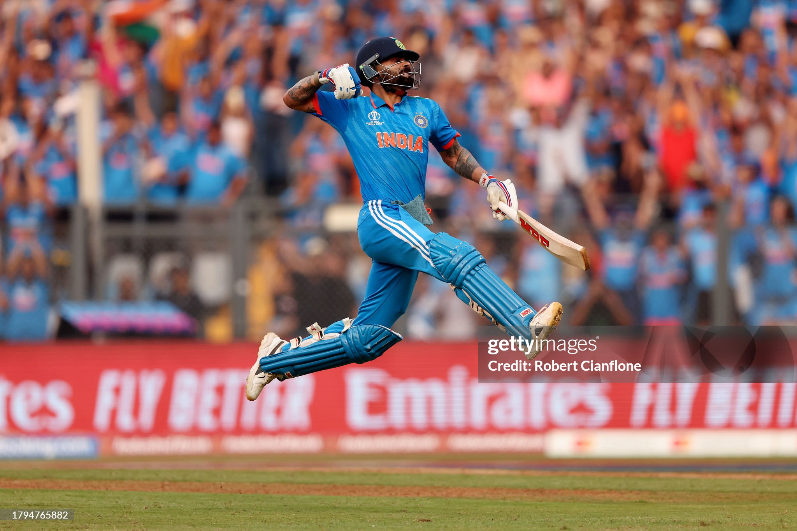
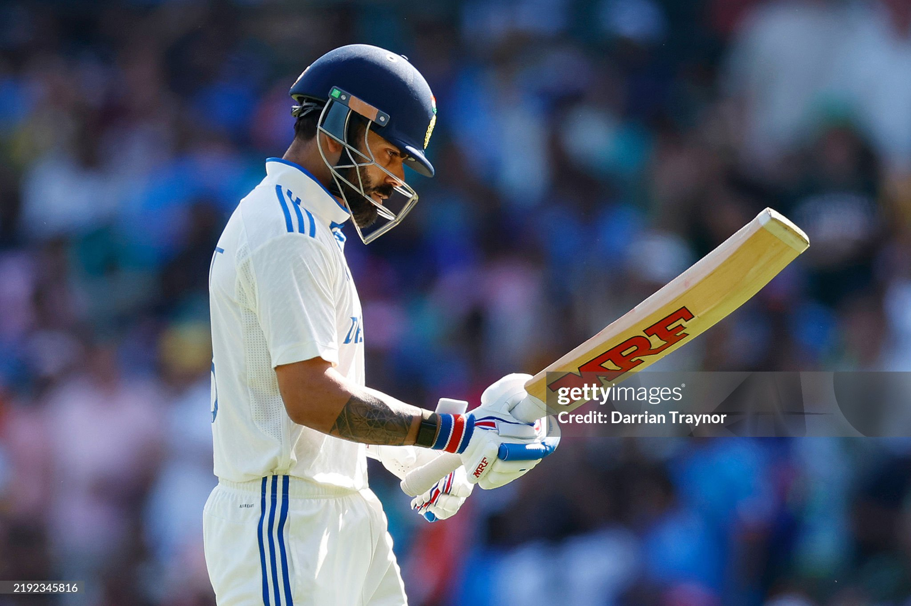

Virat Kohli
Virat Kohli (born 5 November 1988) is an Indian international cricketer who plays ODI cricket for the India
national
team and is a former captain in all formats.[4] He is a right-handed batsman and occasional right-arm medium
pace
bowler. Considered one of the greatest all-format batsmen in the history of cricket, he is called the King, the
Chase Master, and the Run Machine for his skills, records and ability to lead his team to victory.[5] Kohli is
the
highest run-scorer in the Indian Premier League, third in T20I, third in ODI, and third in international
cricket.[6]
He has the most ODI centuries and second-most centuries in international cricket with 82 centuries across all
formats of the game.[7] He is the only batter to earn 900 rating points in all three formats. 937 points in Test
format and 909 points in both ODI & T20I formats.
Kohli was the captain of the 2008 U19 World Cup winning team and was a crucial member of the teams that won 2011
ODI
World Cup, 2013 Champions Trophy, 2024 T20 World Cup, and 2025 Champions Trophy. He plays for Royal Challengers
Bengaluru in the Indian Premier League and for Delhi in domestic cricket. In 2013, Kohli was ranked number one
in
the ODI batting rankings. In 2015, he achieved the same in T20I.[8] In 2018, he was ranked number one in Test,
making him the only Indian to hold the number one spot in all three formats. He is the first player to score
20,000
runs in a decade. He was the Cricketer of the Decade for 2011 to 2020.[9]


